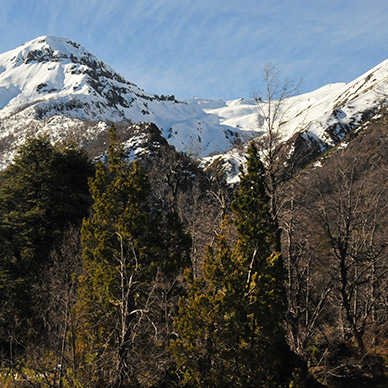

Chile es la economía emergente mejor evaluada de la región latinoamericana y una de las más reconocidas a nivel mundial.
Sus características: estabilidad, transparencia, competitividad y excelentes proyecciones de negocios, lo transforman en el mejor destino para las inversiones extranjeras de Latinoamérica y uno de los más destacados del orbe.
En su World Investment Report 2015, la UNCTAD ubicó a Chile como el undécimo receptor mundial de Inversión Extranjera Directa (IED). El año pasado, US$20.457 millones ingresaron al país por este concepto.
PORQUE LIDERA LATINOAMÉRICA EN
Ambiente de Negocios
13° a nivel mundial – Ranking de Ambiente de Negocios Economist Intelligence Unit, 2014-2018
Competitividad
35° a nivel mundial – Ranking de Competitividad World Economic Forum, 2015
Mejores países para hacer negocios
30° a nivel mundial – Revista Forbes, 2015
Facilidad para hacer negocios
48° a nivel mundial, 2° en Latinoamérica – Ranking Doing Business del Banco Mundial, 2015
PIB per cápita (PPP)
US$23.563, 1° en Latinoamérica – Fondo Monetario Internacional, 2015
PORQUE ES UN PAÍS CON BAJO RIESGO
Porque es una de las economías más abiertas del mundo
Acuerdos comerciales con más de 60 países que expanden su mercado interno de 17 millones de habitantes a más de 4.300 millones de potenciales consumidores en todo el mundo (un 63% de la población global).
Turismo en Chile y en el mundo
Durante 2015, el turismo internacional aumentó casi el doble que la economía mundial, creciendo por sobre la media histórica por sexto año consecutivo, y generando ingresos por más de US$1.232.000 millones.
Los pronósticos de la Organización Mundial de Turismo (OMT) señalan que al año 2030 se registrarán 1.800 millones de llegadas por turismo internacional y que serán las economías emergentes, entre ellas Chile, las que crecerán prácticamente al doble del ritmo de las economías avanzadas, acaparando para ese año, 57% del mercado mundial del turismo.
2015: Turismo Internacional, una senda de crecimiento sólida
PERFIL TURÍSTICO DE CHILE
Se espera que hacia el año 2020 el turismo en Chile aporte el 6% del PIB nacional, duplicando de esta manera su aporte actual.
En términos de competitividad turística, Chile se ubica en el 2º lugar a nivel Sudamericano en el Índice de Competitividad en Viajes y Turismo que elabora el Foro Económico Mundial (WEF).
Turismo Receptivo
El turismo receptivo ha crecido a una tasa promedio anual que bordea el 10% (en llegadas y gasto) durante la última década. En 2015, el crecimiento del turismo receptivo en Chile no sólo continuó con su tendencia positiva, sino que presentó un avance excepcional de 21,9% respecto al año anterior en términos de llegada de turistas.
Turismo Interno
El turismo interno se encuentra en franca expansión, motivado por la creciente capacidad de gasto de los chilenos, la disponibilidad de tarifas aéreas económicas y la relevancia que se le ha dado a su fomento por parte del Estado, masificando campañas promocionales e incrementando los programas de turismo social existentes, entre otros.
TURISMO DE NATURALEZA
El turismo de naturaleza se entiende como un segmento turístico con una demanda especial, que se caracteriza en promover actividades relacionadas con la naturaleza, en atractivos paisajes naturales poco intervenidos, preferiblemente en áreas protegidas. Las actividades que se pueden realizar van desde observación de la flora y la fauna hasta el turismo de aventura pasando por la pesca y caza; fotografía; deportes, etc.
De todos los turistas extranjeros ingresados por el aeropuerto Arturo Merino Benítez en el año 2015, un 51% lo hizo motivado por la naturaleza, los paisajes y la flora y fauna. Esto demuestra que existe un potencial de desarrollar el turismo de naturaleza para que más turistas, chilenos y extranjeros disfruten el hermoso patrimonio natural que ofrece Chile.
ATRACCION DE INVERSIONES TURISTICAS
La política de crecimiento económico representada por la Agenda de Productividad, Innovación y Crecimiento que está implementando el Gobierno de Chile, que considera el Turismo como un sector relevante para la economía del país; hace necesario dinamizar e incentivar las inversiones nacionales y extranjeras con el desafío de transformar el Desarrollo Turístico Sustentable como un importante motor de crecimiento.
A partir del reconocimiento del territorio nacional como un espacio de Oportunidades para proyectos turísticos sustentables, nace el Mapa de Oportunidades de Inversiones Turísticas en terrenos de propiedad fiscal a lo largo del territorio nacional.
Estas oportunidades buscan diversificar la oferta de servicios turísticos de naturaleza a través del desarrollo de proyectos turísticos de diferentes tamaños y categorías, bajo una lógica de desarrollo sustentable en sus tres variables; ambiental, social y económica.
PRINCIPIOS DE CONSTRUCCION SUSTENTABLE
Desde un punto de vista ambiental, se busca que los proyectos generen un impacto positivo sobre el entorno a través de su emplazamiento, la conservación de materiales y recursos naturales, la calidad de la experiencia turística y el enriquecimiento de la interpretación ambiental.
El diseño de las obras debe estudiar las variables climáticas y geográficas del lugar como estacionalidad, precipitaciones, irradiación solar, temperaturas, asoleamientos, etc, de forma tal de plantear una estrategia de eficiencia energética que considere minimizar la pérdida calórica, maximizar el uso de luz natural, uso de ventilación cruzada para refrescar ambientes, envolventes de alta aislación térmica, sistemas de captación de aguas lluvias, tratamiento de aguas grises y negras, baños secos, reciclaje, compost, entre otros.
Respecto a la materialidad de los proyectos, ésta debe responder a los factores críticos dados por las condiciones del territorio y los requerimientos de infraestructura, privilegiar materiales locales, de baja necesidad de cimentación y bajo impacto visual.
Desde un punto de vista social, se espera que los diseños provean de espacios y lugares de carácter inclusivos (enfoque de género, accesibilidad universal) y que al mismo tiempo potencien la identidad y el patrimonio cultural y ambiental del paisaje. Asimismo, se busca que el proyecto genere nuevas fuentes laborales, priorizando la contratación de mano de obra local.
Operacionalmente, los proyectos deben considerar incluir sistemas de abastecimiento energético renovable que otorgue autonomía a la operación, entre los que se encuentran geotermia, paneles solares, paneles fotovoltaicos, iluminación led, etc.
Desde un punto de vista económico, se espera generar y asegurar actividades económicas viables a largo plazo, que sean capaces de captar mercados de consumo turístico especializado que aumenten el gasto turístico; y de esta manera incrementar los ingresos de divisas al país, diversificando la oferta de productos ecoturísticos y elevando la productividad de la actividad turística del país.
CONCESIONES
El Ministerio de Bienes Nacionales tiene la facultad de administrar los bienes fiscales, entre las formas de administrar dichos bienes se encuentra la posibilidad de otorgar concesiones de largo plazo sobre terrenos fiscales para el desarrollo de proyectos de toda índole, incluyendo los de turismo. Ello significa que una vez terminado el periodo de Concesión los terrenos son devueltos al Estado.
El conjunto de bienes inmuebles fiscales concesionables está conformado por terrenos referenciales que se encuentran disponibles para el desarrollo de proyectos de inversión privada, incluyendo las de turismo, en aquellas localidades que reúnen las ventajas comparativas para el mejor resultado de los proyectos, a través de Concesiones.
Características de los contratos de concesión
- Duración desde 5 años y hasta 50, renovables. Sin embargo, la duración estándar para proyectos productivos es de 30 años.
- Pueden postular personas naturales o jurídicas chilenas o extranjeras. No obstante lo anterior, los contratos se celebran con personas jurídicas chilenas, que deben ser constituidas al efecto.
- Transferible y prendable.
- Onerosas (pagan una renta concesional anual).
- Por regla general, se adjudican por licitación pública o privada. Pueden otorgarse directamente en casos debidamente fundados, si así lo decide el Ministro de Bienes Nacionales en el caso concreto.
- Los permisos ambientales y sectoriales son responsabilidad del concesionario
Procedimiento de postulación
- Interesado deberá presentar una solicitud con el respectivo proyecto y plano que singulariza el inmueble en la Secretaría Regional Ministerial de Bienes Nacionales respectiva.
- Se establece disponibilidad del inmueble para efectos del proyecto y se determina procedimiento de entrega (licitación por regla general o asignación directa en casos calificados).
- Antecedentes pasan a la Comisión Especial de Enajenaciones, se fija el valor comercial y se propone la renta concesional, la que se decide finalmente por el Ministro de Bienes Nacionales.
- Una vez dictado el decreto de adjudicación, se suscribirá el contrato de concesión, el que deberá inscribirse en el Conservador de Bienes Raíces competente.
-

Fundo Rehuelhué - Cochamó
Comuna Cochamó - Región de los Lagos
Superficie total del área: 11.318 ha
-

Piedras Blancas (PN Alerce Andino)
Comuna de Puerto Montt / Región de los Lagos
Superficie total de 611,2 ha.
-

Laguna La Netttgra
Comuna de Palena / Región de los Lagos
Superficie total de 10,7 ha.
-

Fundo Rehuelhué - Cochamó
Comuna Cochamó - Región de los Lagos
Superficie total del área: 11.318 ha
-
Piedras Blancas (PN Alerce Andino)
Comuna de Puerto Montt / Región de los Lagos
Superficie total de 611,2 ha.
-
Laguna La Netttgra
Comuna de Palena / Región de los Lagos
Superficie total de 10,7 ha.
-

Fundo Rehuelhué - Cochamó
Comuna Cochamó - Región de los Lagos
Superficie total del área: 11.318 ha